library(tidyverse)
library(rstanarm)
library(bayestestR)
library(see)
library(REDI)Démystifier la performance : pièges, biais, et illusions statistiques
I) Les index cumulés : illustration et limites
Calculer la charge d’entrainement cumulé avec le Robust Exponential Decreasing Index (REDI) et visualiser les résultats.
Importer et convertir le jeu de données dans le format attendu (un tibble/dataframe avec une colonne
Inputpour la date, etOutputpour la charge d’entrainement).Calculer la valeur de charge d’entrainement cumulée à la dernière date présente dans le jeu de données.
Utiliser la fonction wrapprer redi() pour calculer le REDI pour différentes coefficients de décroissance \(\lambda\) et afficher les résultats. Analyser les résultats obtenus et proposer un critère de choix de ce coefficient dans un contexte sportif.
Vous pouvez utiliser les fonctions suivantes :
format_data()
compute_redi()
redi()
Assurez-vous de bien comprendre les arguments de chaque fonction en consultant la documentation si nécessaire : https://grenouil.github.io/REDI/
## 1 ## Import dataset and convert the dataset to the correct format
data_workload <- read_csv("Data/data_workload_fm.csv")
db_workload <- format_data(
data = data_workload,
input = 'Date',
output = 'Training load'
)
## 2 ## Compute REDI for the last date in the dataset
compute_redi(db_workload)[1] 176.2764## 3 ## Apply redi() on data using a vector of coefficients and display results
db_full_redi <- redi(data = db_workload, coef = c(0.05, 0.1, 0.5), plot = TRUE)
On remarque que ce type d’index fournit une visualisation intuitive (ici de la charge cumulée d’entrainement). Cependant, en pratique, ils aggrègent souvent de nombreuses données en un nombre unique, pouvant entrainer une perte d’information. De plus, il peut être compliqué d’estimer l’influence de tels indicateurs sur des quantités d’intérêt pratique, telles que la performance ou le risque de blessure. Les articles scientifiques présentent parfois de simples corrélations ou associations entre une haute (ou basse) valeur d’un index avec la performance ou la blessure. Ce type de résultats est à prendre avec beaucoup de prudence, car l’information est largement altérée. Généralement, un modèle de regréssion prenant en entrée les données brutes (ici la série temporelle de la charge d’entrainement) et en sortie la mesure d’intérêt (perf/blessure) sera bien plus adapté et informatif pour tirer des conclusions sur l’effet directe d’une variable sur une autre.
II) Premiers pas avec l’inférence Bayésienne
Distribution a posteriori pour le modèle conjugué Beta-Binomial
On rappelle le modèle Beta-Binomial :
- \(p \sim \mathcal{B}e(\alpha, \beta)\)
- \(x \mid p \sim \mathcal{B}(N, p)\)
On souhaite calculer et visualiser la loi a posteriori du paramètre de proportion \(p\) sachant \(x\). Ce modèle peut classiquement s’interpréter comme le modèle d’observation de \(N\) pièces de monnaie identiques, où \(p\) est la probabilité d’obtenir face.
D’après le théorème de Bayes, on sait que : \[ p \mid x \sim \mathcal{B}e(\alpha + x, \beta + N - x) \tag{1}\]
On fixe les valeurs de paramètres suivantes, mais votre code doit pouvoir se généraliser facilement.
N = 10
alpha = 2
beta = 2Exercice 1
Coder une fonction simu_binom(N, p) qui simule un modèle binomial avec paramètre \(N\) et \(p\).
Consulter l’aide ?rbinom
simu_binom = function(N, p) {
x = rbinom(n=1, size = N, prob = p)
return(x)
}Exercice 2
Soit la simulation suivante:
set.seed(123)
simu = simu_binom(N=10, p=0.7)
simu[1] 8Ici nous avons généré une observation \(x\), telle que \(x = 8\). Coder la loi a posteriori de \(p \mid x\) et tracer la densité de cette loi a posteriori. Tracer sur le même graphique la loi a priori pour comparaison.
Voir le rappel de la loi a posteriori : Equation 1. Vous pouvez utiliser la fonction dbeta pour calculer la densité de la loi bêta.
x = simu
posterior_alpha = alpha + x
posterior_beta = beta + N - x
p_seq = seq(0, 1, length.out = 100)
posterior_density = dbeta(p_seq, shape1 = posterior_alpha, shape2 = posterior_beta)
prior_density = dbeta(p_seq, shape1 = alpha, shape2 = beta)
df = tibble(p = p_seq, density = posterior_density, type = "Posterior") %>%
bind_rows(tibble(p = p_seq, density = prior_density, type = "Prior"))
ggplot(df) +
geom_line(aes(x = p, y = density, col = type, linetype = type)) +
ggtitle(paste("Loi a priori/posteriori de p avec x =", x)) +
xlab("p") +
ylab("Densité") +
theme_classic()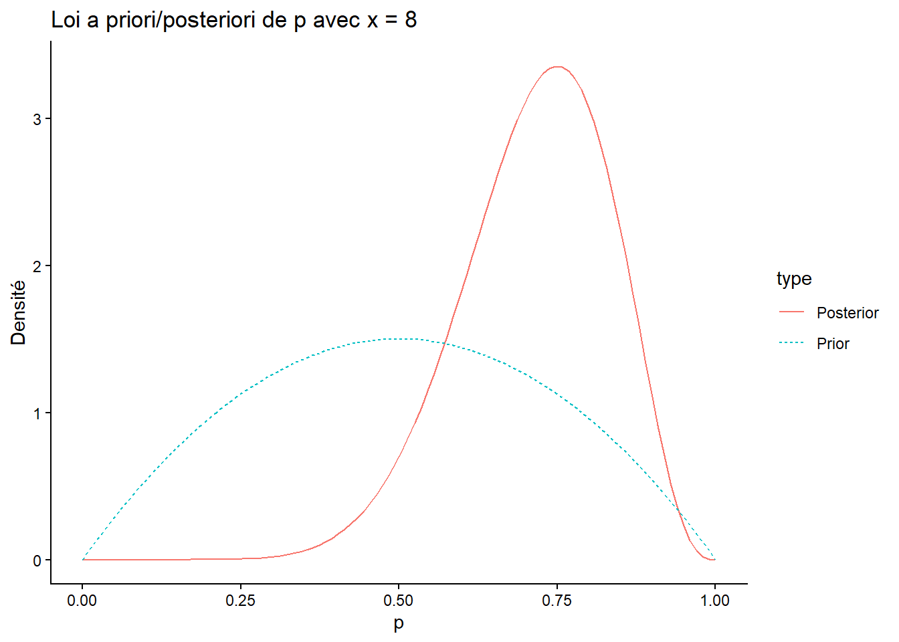
Exercice 3
Répéter l’expérience de l’exercice 2 pour différentes valeurs de \(x\) dans \(\{0, 1, \ldots, N\}\) et tracer les différentes densités sur le même graphique.
Vous pouvez utiliser une boucle pour calculer les densités pour chaque valeur de \(x\) et stocker les résultats dans un data frame. Ensuite, utilisez ggplot2 pour tracer toutes les densités sur le même graphique en utilisant geom_line().
df_all = tibble()
for (x in 0:N) {
posterior_alpha = alpha + x
posterior_beta = beta + N - x
posterior_density = dbeta(p_seq, shape1 = posterior_alpha, shape2 = posterior_beta)
df_temp = tibble(p = p_seq, density = posterior_density, x = as.factor(x))
df_all = bind_rows(df_all, df_temp)
}
ggplot(df_all) +
geom_line(aes(x = p, y = density, color = x)) +
ggtitle("Lois a posteriori p | x pour différentes valeurs de x") +
xlab("p") +
ylab("Densité") +
labs(color = "x") +
theme_classic()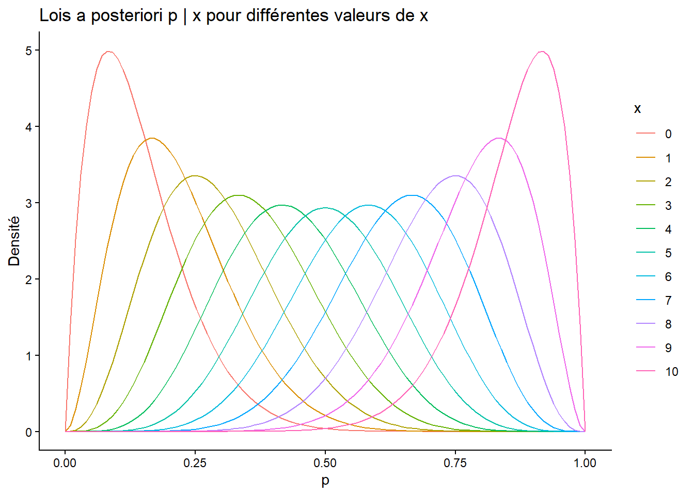
III) Inférence a posteriori et alternatives aux tests statistiques
Pourquoi chercher une alternative aux tests d’hypothèses ?
Un test d’hypothèse classique répond à une question assez particulière : « si l’effet était exactement nul, à quel point mes données seraient-elles surprenantes ? » (c’est la \(p\)-valeur). Cela conduit à des pièges bien connus, particulièrement en sciences du sport où les échantillons sont soit très petits, soit (avec les données de compétition) très nombreux :
- la \(p\)-valeur n’est pas la probabilité que l’hypothèse soit vraie ;
- un résultat « non significatif » ne prouve pas l’absence d’effet ;
- avec assez de données, un effet ridiculement petit devient « significatif » ;
- le seuil à 0,05 impose une décision binaire qui masque l’incertitude.
L’approche bayésienne (cf. partie II) change de point de vue : on calcule directement la loi a posteriori de l’effet qui nous intéresse, puis on la résume. Deux packages font tout le travail :
rstanarm: ajuste un modèle bayésien avec la même syntaxe de formule quelm()(stan_glm()). Les modèles sont précompilés : aucun compilateur n’est nécessaire ;bayestestR: résume et visualise la loi a posteriori avec quelques fonctions très simples.
Trois outils de lecture suffisent pour remplacer l’essentiel des tests classiques :
| Question posée | Approche classique | Alternative bayésienne |
|---|---|---|
| Quelles valeurs de l’effet sont plausibles ? | estimation + IC à 95 % | HDI : intervalle de crédibilité à 95 % (zone où se concentre la loi a posteriori) |
| L’effet va-t-il dans un sens précis ? | \(p\)-valeur | pd (probabilité de direction) : probabilité que l’effet soit positif (ou négatif) |
| L’effet est-il négligeable en pratique ? | test d’équivalence (TOST) | ROPE (region of practical equivalence) : part de la loi a posteriori dans une zone de valeurs « équivalentes à zéro » |
Comment lire la ROPE ?
On définit avant de regarder les résultats un intervalle de valeurs si petites qu’elles n’ont aucun intérêt pratique (par exemple : une différence de 0,1 s sur un 100 m). Ensuite :
- HDI 95 % entièrement hors de la ROPE : l’effet est réel et important ;
- HDI 95 % entièrement dans la ROPE : l’effet est négligeable (on peut conclure à l’absence d’effet utile, ce qu’une \(p\)-valeur ne permet jamais) ;
- sinon : les données ne permettent pas de trancher.
library(rstanarm)
library(bayestestR)
library(see) # nécessaire pour les graphiques de bayestestR
Tip
Pour aller plus loin, le package brms utilise exactement la même logique (brm() au lieu de stan_glm()) avec beaucoup plus de modèles possibles, mais il demande un compilateur C++ (Rtools sous Windows). Tout ce qui suit s’y transpose directement.
Les données : morphologie et performances en natation
Le jeu de données data_morpho_natation.csv contient des performances de nageurs et nageuses de haut niveau (2000-2014). Une ligne = une performance (un nageur, une distance, une année). Colonnes utiles : Sexe, Distance (m), Temps (s), Vitesse (km/h), Taille (cm), Poids (kg), IMC (kg/m²).
Deux précautions avant de comparer :
- la vitesse dépend énormément de la distance (un 50 m est bien plus rapide qu’un 1500 m) : on se restreint donc au 100 m pour comparer des choses comparables ;
- certains IMC sont manquants : on retire ces lignes.
nat <- read_csv("Data/data_morpho_natation.csv") %>%
filter(Distance == 100) %>%
drop_na(IMC) %>%
mutate(Sexe = factor(Sexe, levels = c("Femme", "Homme"))) # Femme = référenceRows: 1704 Columns: 10
── Column specification ────────────────────────────────────────────────────────
Delimiter: ","
chr (3): Nom, Pays, Sexe
dbl (7): Distance, Taille, Poids, IMC, Temps, Vitesse, AnneePerf
ℹ Use `spec()` to retrieve the full column specification for this data.
ℹ Specify the column types or set `show_col_types = FALSE` to quiet this message.nat %>% count(Sexe)# A tibble: 2 × 2
Sexe n
<fct> <int>
1 Femme 140
2 Homme 144Exercice 1 — Estimer la différence de vitesse Hommes / Femmes
- Visualiser la distribution de la vitesse selon le sexe.
- Ajuster avec
stan_glm()le modèleVitesse ~ Sexe. Le coefficientSexeHommeest la différence de vitesse moyenne Hommes − Femmes. - Résumer la loi a posteriori de cette différence (médiane et HDI à 95 %) et la visualiser.
- Comparer avec le résultat d’un test \(t\) classique.
- La syntaxe de
stan_glm()est celle delm():stan_glm(y ~ x, data = ...). Ajoutezrefresh = 0pour masquer le détail de l’échantillonnage etseed = 2025pour la reproductibilité. describe_posterior(modele, parameters = "SexeHomme")donne un résumé en un tableau ;hdi()calcule l’intervalle de crédibilité et peut être passé àplot().t.test(y ~ groupe, data = ...).
## 1 ## Toujours regarder les données d'abord
ggplot(nat, aes(x = Sexe, y = Vitesse, fill = Sexe)) +
geom_violin(alpha = 0.5) +
geom_jitter(width = 0.1, alpha = 0.4) +
theme_classic()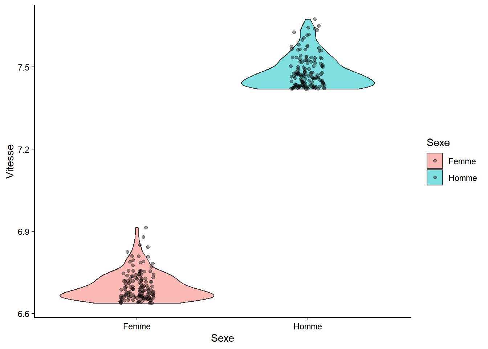
## 2 ## Modèle bayésien (équivalent bayésien du test t)
m_vitesse <- stan_glm(Vitesse ~ Sexe, data = nat, refresh = 0, seed = 2025)
## 3 ## Résumé et loi a posteriori de la différence H - F
describe_posterior(m_vitesse, ci = 0.95, test = NULL, parameters = "SexeHomme")Summary of Posterior Distribution
Parameter | Median | 95% CI | Rhat | ESS (tail)
------------------------------------------------------
SexeHomme | 0.78 | [0.77, 0.80] | 0.999 | 2388plot(hdi(m_vitesse, ci = 0.95, parameters = "SexeHomme"))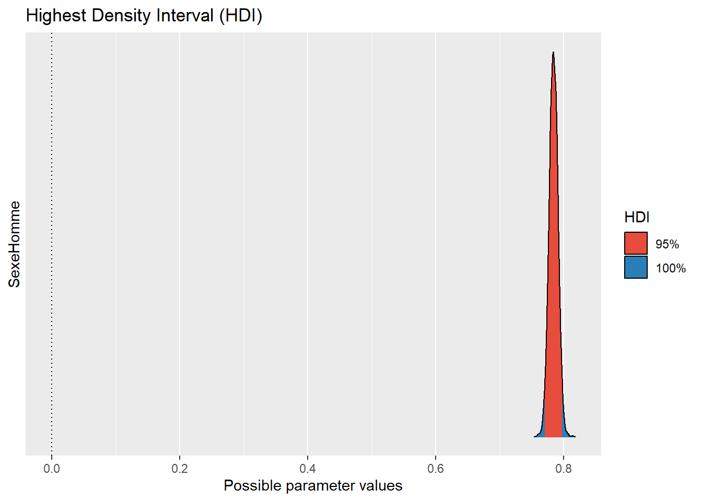
## 4 ## Comparaison avec l'approche classique
t.test(Vitesse ~ Sexe, data = nat)
Welch Two Sample t-test
data: Vitesse by Sexe
t = -117.87, df = 279.79, p-value < 2.2e-16
alternative hypothesis: true difference in means between group Femme and group Homme is not equal to 0
95 percent confidence interval:
-0.7970323 -0.7708478
sample estimates:
mean in group Femme mean in group Homme
6.700584 7.484524 Lecture. Les hommes sont plus rapides que les femmes d’environ 0,8 km/h sur 100 m, avec une incertitude très faible. Le test \(t\) et le HDI à 95 % donnent ici pratiquement la même information (estimation et intervalle) : la différence tient à l’interprétation. Le HDI se lit directement : « avec 95 % de probabilité, la différence vraie est dans cet intervalle », alors qu’un intervalle de confiance classique ne s’interprète pas ainsi. Les priors par défaut de rstanarm sont faiblement informatifs (prior_summary(m_vitesse) les affiche) : face à 284 observations, ils pèsent très peu et les données « parlent d’elles-mêmes ».
Exercice 2 — Décider avec la pd et la ROPE : « significatif » n’est pas « important »
Reprendre le modèle m_vitesse.
- Calculer la probabilité de direction (pd) du coefficient
SexeHommeet la représenter. - On considère qu’une différence de vitesse inférieure à 0,02 km/h (environ 0,3 % de la vitesse, soit environ 0,16 s sur un 100 m) est sans intérêt pratique. Calculer la proportion de la loi a posteriori dans la ROPE correspondante et la représenter.
- Que conclure sur l’effet du sexe sur la vitesse ?
p_direction() et rope() (argument range = c(borne_basse, borne_haute) et ci = 0.95) acceptent le modèle et se passent à plot(). Pour tout résumer d’un coup : describe_posterior(modele, test = c("p_direction", "rope"), rope_range = ...).
rope_vitesse <- c(-0.02, 0.02) # différence "négligeable" : moins de 0.02 km/h
plot(p_direction(m_vitesse, parameters = "SexeHomme"))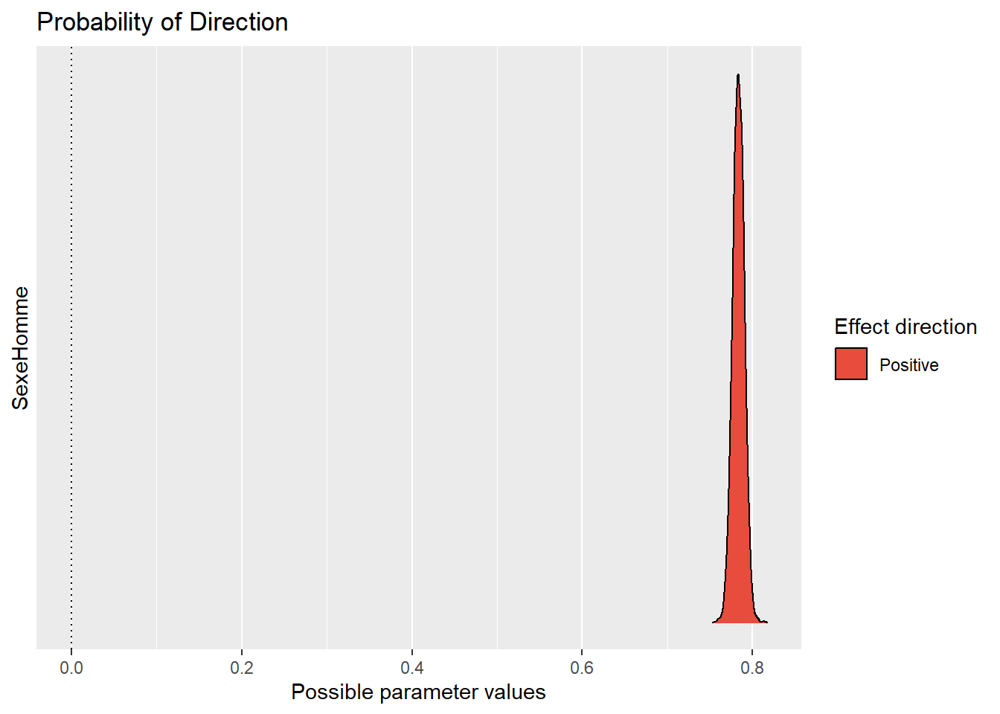
plot(rope(m_vitesse, range = rope_vitesse, ci = 0.95, parameters = "SexeHomme"))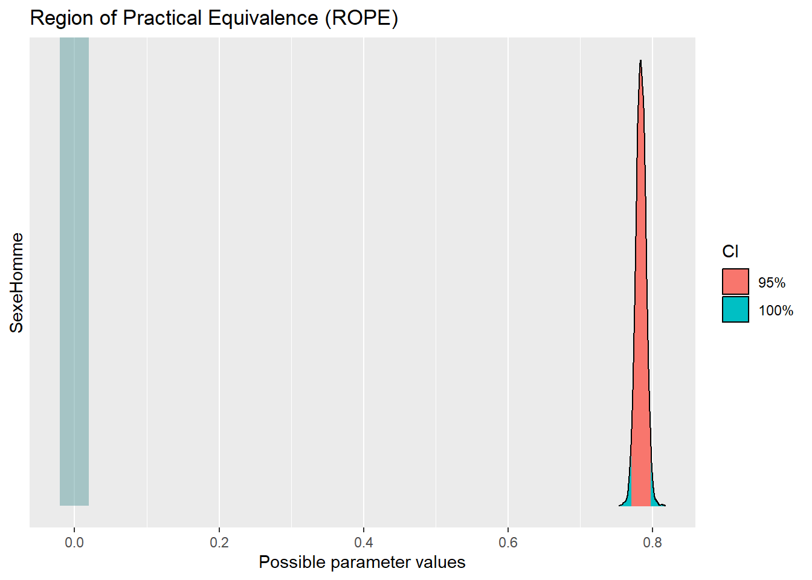
# Tout en un tableau
describe_posterior(m_vitesse, ci = 0.95, test = c("p_direction", "rope"),
rope_range = rope_vitesse, parameters = "SexeHomme")Summary of Posterior Distribution
Parameter | Median | 95% CI | pd | ROPE | % in ROPE | Rhat | ESS (tail)
-----------------------------------------------------------------------------------------
SexeHomme | 0.78 | [0.77, 0.80] | 100% | [-0.02, 0.02] | 0% | 0.999 | 2388Lecture. La pd est d’environ 100 % : on est certain que les hommes sont plus rapides. La ROPE contient 0 % de la loi a posteriori : la différence n’est pas seulement non nulle, elle est très au-delà du seuil d’intérêt pratique. Ce cas est simple ; l’exercice 4 montre un cas où la ROPE apporte vraiment quelque chose.
Exercice 3 — La différence d’IMC Hommes / Femmes
En réutilisant la démarche des exercices 1 et 2, comparer l’IMC des hommes et des femmes de l’échantillon. On considère qu’une différence inférieure à 0,5 kg/m² (environ 1,6 kg pour une personne de 1,80 m) est négligeable. Représenter le résultat.
Seul le modèle change : IMC ~ Sexe. Le reste (describe_posterior(), plot()) est identique.
m_imc_sexe <- stan_glm(IMC ~ Sexe, data = nat, refresh = 0, seed = 2025)
describe_posterior(m_imc_sexe, ci = 0.95, test = c("p_direction", "rope"),
rope_range = c(-0.5, 0.5), parameters = "SexeHomme")Summary of Posterior Distribution
Parameter | Median | 95% CI | pd | ROPE | % in ROPE | Rhat | ESS (tail)
-----------------------------------------------------------------------------------------
SexeHomme | 2.49 | [2.19, 2.80] | 100% | [-0.50, 0.50] | 0% | 1.001 | 2963plot(rope(m_imc_sexe, range = c(-0.5, 0.5), ci = 0.95, parameters = "SexeHomme"))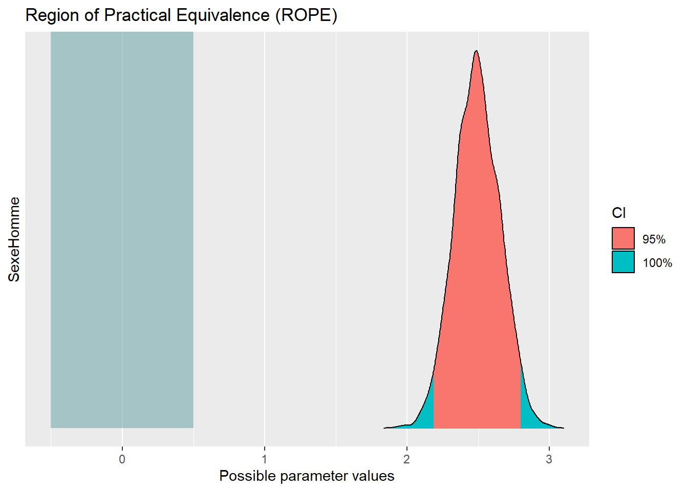
Lecture. Les hommes ont un IMC supérieur d’environ 2,5 points : un effet clair et important (HDI hors de la ROPE). Cet écart reflète surtout la masse musculaire plus importante des nageurs, rappel utile : l’IMC ne distingue pas masse grasse et masse maigre.
Exercice 4 — Prouver une absence d’effet : l’IMC influence-t-il la vitesse ?
On se demande si, à sexe égal, les nageurs à IMC plus élevé nagent plus ou moins vite.
- Représenter la vitesse en fonction de l’IMC pour chaque sexe, puis ajuster le modèle
Vitesse ~ IMC + Sexe. - Chaque point d’IMC change-t-il la vitesse de plus de 0,02 km/h ? Réaliser un test d’équivalence bayésien sur le coefficient de l’IMC.
- Quelle conclusion un test classique (\(p > 0{,}05\)) permettrait-il de tirer, et en quoi la conclusion bayésienne est-elle plus informative ?
equivalence_test(modele, range = ..., ci = 0.95, parameters = "IMC") renvoie une décision (Accepted, Rejected ou Undecided) ; il se passe aussi à plot().
## 1 ## Les droites sont presque plates
ggplot(nat, aes(x = IMC, y = Vitesse, color = Sexe)) +
geom_point(alpha = 0.5) +
geom_smooth(method = "lm") +
theme_classic()`geom_smooth()` using formula = 'y ~ x'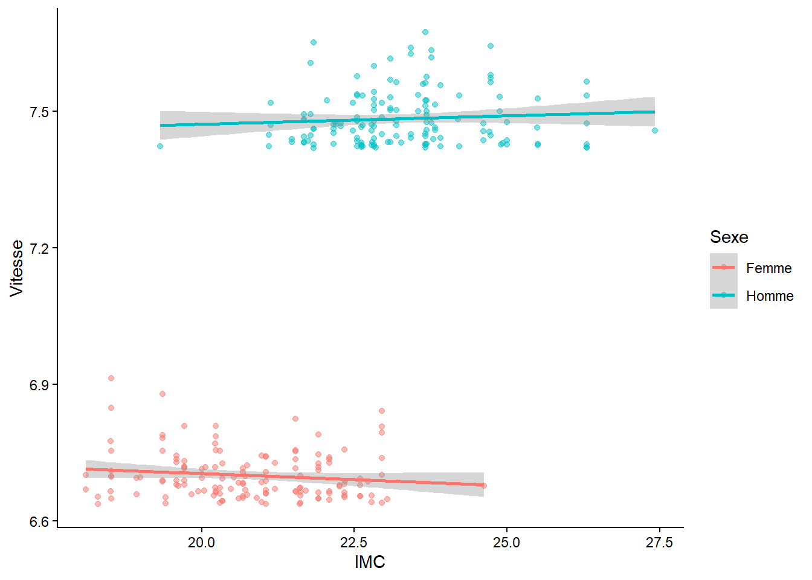
m_imc <- stan_glm(Vitesse ~ IMC + Sexe, data = nat, refresh = 0, seed = 2025)
## 2 ## Test d'équivalence : le HDI est-il dans la ROPE ?
test_eq <- equivalence_test(m_imc, range = rope_vitesse, ci = 0.95, parameters = "IMC")
test_eq# Test for Practical Equivalence
ROPE: [-0.02 0.02]
Parameter | H0 | inside ROPE | 95% ETI
----------------------------------------------------------
IMC | Accepted | 100.00 % | [-5.81e-03, 4.18e-03]plot(test_eq)Picking joint bandwidth of 0.000385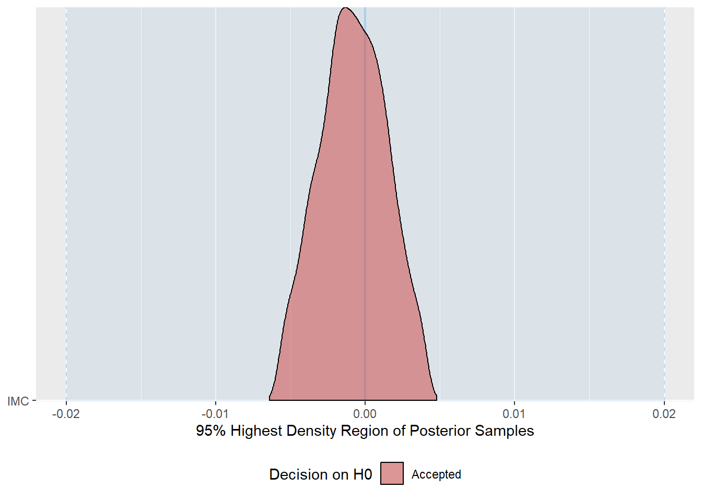
Lecture. Les droites sont quasi horizontales : une fois le sexe pris en compte, l’IMC ne prédit pas la vitesse sur 100 m. Le HDI à 95 % du coefficient est entièrement contenu dans la ROPE : on peut affirmer que l’effet est négligeable. Un test classique non significatif dirait seulement « on n’a pas pu mettre d’effet en évidence », ce qui est compatible aussi bien avec une absence d’effet qu’avec un manque de données. C’est l’un des gros avantages pratiques de la ROPE.
Exercice 5 — Piège : découper l’IMC en classes « bas / moyen / haut »
Une pratique très courante consiste à transformer une variable continue en catégories (« bas », « moyen », « haut »), puis à comparer les groupes. Voyons ce que cela donne avec l’IMC.
- Découper l’IMC en 3 classes de même effectif (terciles). Représenter la vitesse par classe et estimer l’effet de la classe avec le modèle
Vitesse ~ classe_imc. Quelle conclusion tire-t-on « naïvement » ? - Que se cache-t-il dans ces classes ? Représenter la proportion d’hommes et de femmes dans chaque classe, puis les mêmes données sans découper l’IMC (nuage de points coloré par sexe).
- Refaire le modèle par classes en ajoutant le sexe, et comparer avec l’analyse en continu de l’exercice 4. Que devient l’effet ?
cut_number(IMC, 3, labels = c("Bas", "Moyen", "Haut"))découpe en classes de même effectif.geom_bar(position = "fill")représente des proportions.- Les paramètres du modèle par classes s’appellent
classe_imcMoyenetclasse_imcHaut:parameters = "classe_imc"les sélectionne tous les deux.
## 1 ## Découpage en terciles et comparaison "naïve"
nat <- nat %>% mutate(classe_imc = cut_number(IMC, 3, labels = c("Bas", "Moyen", "Haut")))
ggplot(nat, aes(x = classe_imc, y = Vitesse)) +
geom_boxplot() +
theme_classic()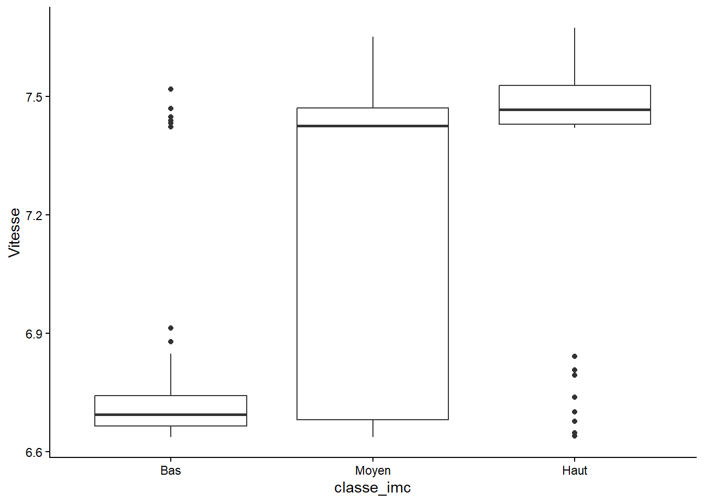
m_classes <- stan_glm(Vitesse ~ classe_imc, data = nat, refresh = 0, seed = 2025)
plot(hdi(m_classes, ci = 0.95, parameters = "classe_imc"))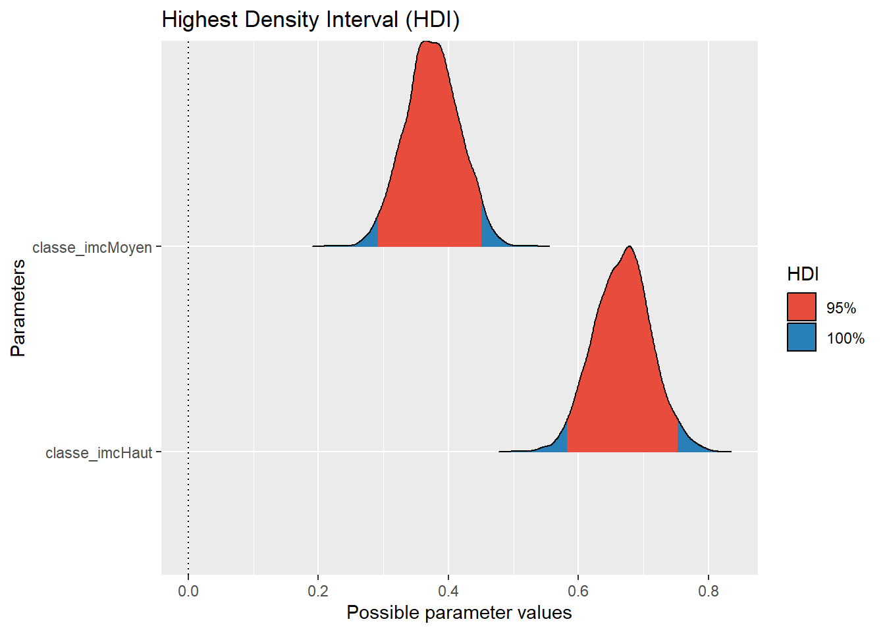
## 2 ## Qui se cache dans chaque classe ?
ggplot(nat, aes(x = classe_imc, fill = Sexe)) +
geom_bar(position = "fill") +
theme_classic()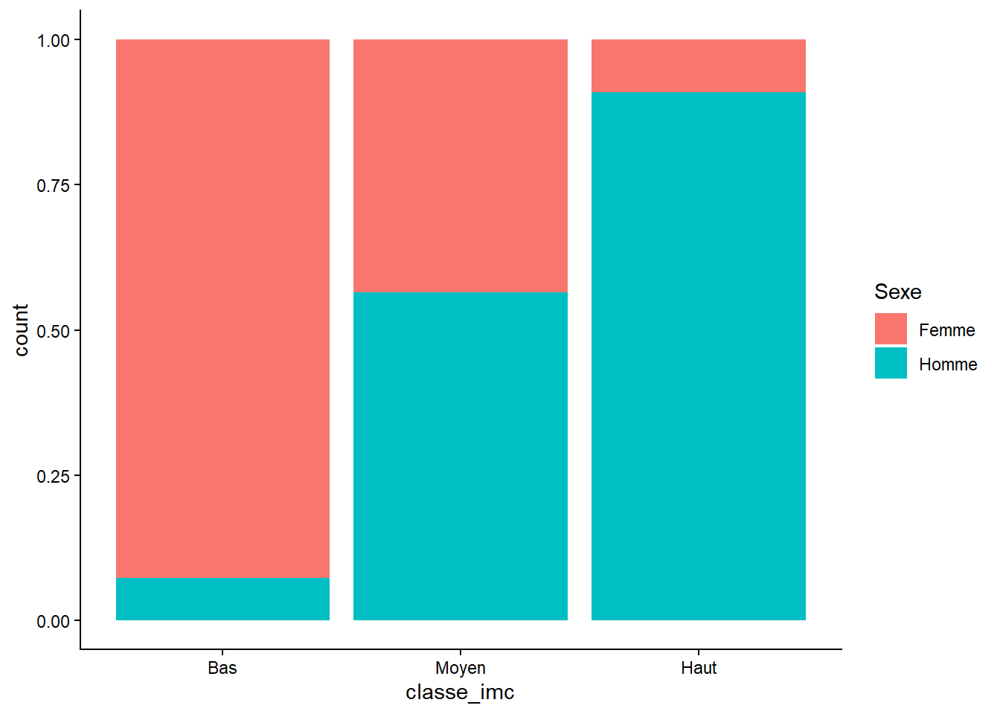
ggplot(nat, aes(x = IMC, y = Vitesse, color = Sexe)) +
geom_point() +
theme_classic()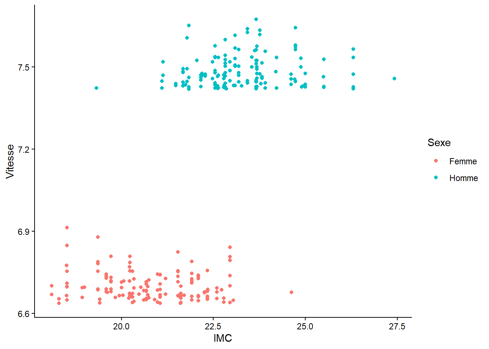
## 3 ## Même découpage, mais en tenant compte du sexe (à comparer avec m_imc, ex. 4)
m_classes_sexe <- stan_glm(Vitesse ~ classe_imc + Sexe, data = nat, refresh = 0, seed = 2025)
plot(hdi(m_classes_sexe, ci = 0.95, parameters = "classe_imc"))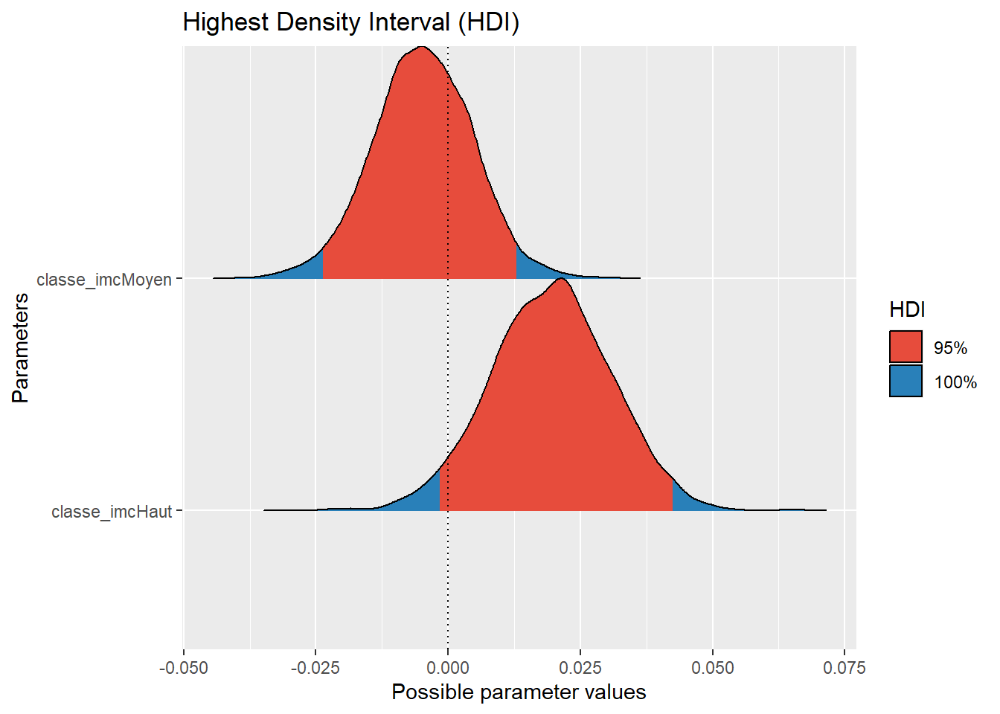
Lecture.
- En découpant, on observe un « effet dose-réponse » spectaculaire : les classes « Moyen » et « Haut » sont environ 0,4 et 0,7 km/h plus rapides que « Bas ». On conclurait naïvement que l’IMC élevé rend plus rapide.
- Mais les classes d’IMC sont en réalité des classes de sexe : environ 7 % d’hommes dans « Bas », 56 % dans « Moyen » et 91 % dans « Haut ». Le nuage de points montre deux populations distinctes et, à l’intérieur de chaque sexe, aucune pente. Les boîtes à moustaches, elles, cachent entièrement cette structure.
- Une fois le sexe pris en compte, les écarts entre classes s’effondrent (au plus de l’ordre de 0,02 km/h, sans ordre cohérent), en accord avec l’analyse en continu de l’exercice 4.
Pourquoi éviter de découper une variable continue ?
- Perte d’information : on ignore tout ce qui varie à l’intérieur d’une classe. Une coupure à la médiane peut faire perdre l’équivalent d’environ un tiers des données (Altman & Royston, 2006, BMJ, « The cost of dichotomising continuous variables »).
- Coupures arbitraires : terciles, seuils de la littérature, médiane de l’échantillon ? Les conclusions peuvent changer, et la tentation est grande de choisir la coupure qui « marche ».
- Sauts artificiels : deux nageurs à 22,8 et 22,9 sont dans des classes différentes, alors que 20,1 et 22,8 sont traités comme identiques.
- Structure masquée : comme ici, des classes peuvent cacher une variable de confusion.
À faire à la place : garder l’IMC continu, le représenter par un nuage de points avec courbe de tendance (geom_smooth()), et, si la relation n’est pas une droite, laisser le modèle la courber (par exemple poly(IMC, 2)) plutôt que de la découper.
Exercice 6 — Un piège : des performances qui ne sont pas indépendantes
Les lignes du jeu de données sont des performances, pas des nageurs : un même nageur peut apparaître plusieurs années de suite.
- Combien de nageurs différents y a-t-il dans
nat, pour combien de performances ? - Pourquoi cela pose-t-il problème pour les modèles précédents ?
- Ajuster à nouveau
Vitesse ~ IMC + Sexeen ajoutant un effet aléatoire par nageur et comparer l’incertitude sur le coefficient de l’IMC. - Représenter sur un même graphique la loi a posteriori du coefficient de l’IMC dans le modèle simple et dans le modèle hiérarchique, avec la ROPE de l’exercice 4. Qu’est-ce qui change ?
- Pour un modèle avec effet aléatoire, utilisez
stan_lmer()à la place destan_glm(); l’effet aléatoire par nageur s’écrit(1 | Nom)dans la formule. - Pour comparer les deux modèles, empilez les sorties de
describe_posterior()avecbind_rows(). - Les tirages a posteriori d’un modèle s’obtiennent avec
as.data.frame(modele)(une colonne par paramètre, iciIMC). Empilez ceux des deux modèles avecbind_rows()et tracez-les avecgeom_density().
## 1 ##
c(nageurs = n_distinct(nat$Nom), performances = nrow(nat)) nageurs performances
118 284 ## 3 ## Modèle avec effet aléatoire par nageur
m_mixte <- stan_lmer(Vitesse ~ IMC + Sexe + (1 | Nom), data = nat,
refresh = 0, seed = 2025)
bind_rows(
simple = describe_posterior(m_imc, ci = 0.95, test = "rope",
rope_range = rope_vitesse, parameters = "IMC"),
mixte = describe_posterior(m_mixte, ci = 0.95, test = "rope",
rope_range = rope_vitesse, parameters = "IMC"),
.id = "modele")Summary of Posterior Distribution
Parameter | modele | Median | 95% CI | ROPE | % in ROPE
--------------------------------------------------------------------------
IMC | simple | -7.89e-04 | [-0.01, 0.00] | [-0.02, 0.02] | 100%
IMC | mixte | -1.02e-03 | [-0.01, 0.00] | [-0.02, 0.02] | 100%
Parameter | Rhat | ESS (tail)
------------------------------
IMC | 1.001 | 2630
IMC | 1.000 | 2952## 4 ## Posterior du coefficient de l'IMC : modèle simple vs modèle hiérarchique
bind_rows(
simple = tibble(effet = as.data.frame(m_imc)$IMC),
mixte = tibble(effet = as.data.frame(m_mixte)$IMC),
.id = "modele"
) %>%
ggplot(aes(x = effet, fill = modele)) +
annotate("rect", xmin = rope_vitesse[1], xmax = rope_vitesse[2],
ymin = -Inf, ymax = Inf, alpha = 0.15) + # zone grisée = ROPE
geom_density(alpha = 0.5) +
labs(x = "Effet d'un point d'IMC sur la vitesse (km/h)", y = "Densité") +
theme_classic()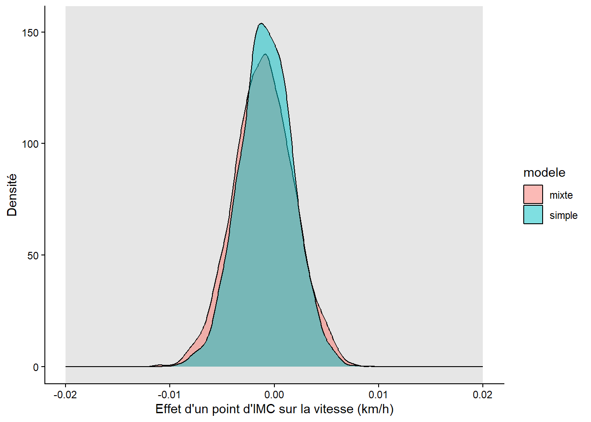
Lecture. Les performances d’un même nageur se ressemblent : les 284 lignes valent moins que 284 nageurs indépendants. Le modèle simple traite ces lignes comme indépendantes et sous-estime donc l’incertitude. Le modèle avec effet aléatoire en tient compte, et l’intervalle devient en général plus large. Ce piège existe tout autant avec un test \(t\) classique : l’approche bayésienne ne le corrige pas automatiquement, mais rstanarm rend la solution (le modèle hiérarchique) très accessible.
À retenir
- On ne se demande plus « est-ce significatif ? » mais « quelles valeurs de l’effet sont plausibles, et est-ce que cela compte en pratique ? ».
- HDI : où se situe l’effet. pd : dans quel sens. ROPE : est-il assez grand pour avoir de l’importance ?
- La ROPE se choisit selon le contexte sportif, avant de regarder les résultats.
- Ne découpez pas une variable continue en classes (« bas / moyen / haut ») : on perd de l’information, les coupures sont arbitraires et la structure des données se cache (exercice 5).
- Les pièges (distances mélangées, mesures répétées) restent les mêmes : la méthode ne remplace pas la réflexion sur la structure des données.
IV) Modélisation hiérarchique conjuguée et échantillonneur de Gibbs
Modèle et rappels
Nous considérons les observations \(y_1, \dots, y_n\) modélisées par :
\[ y_i \mid \mu, \sigma^2 \overset{\text{iid}}{\sim} \mathcal{N}(\mu, \sigma^2), \]
et la hiérarchie de priors conjuguées suivante : \[ \mu \mid \sigma^2 \sim \mathcal{N}(\mu_0, \sigma^2 / \kappa_0),\qquad \sigma^2 \sim \text{Inv-Gamma}(\alpha_0, \beta_0), \]
où la paramétrisation de l’inverse-gamma est :
\[p(\sigma^2) \propto (\sigma^2)^{-\alpha_0-1} \exp\left(-\dfrac{\beta_0}{\sigma^2}\right).\]
Formules analytiques du postérieur
Avec les notations :
- \(n\) = nombre d’observations,
- \(\bar{y} = n^{-1} \sum_i y_i\),
- \(S = \sum_i (y_i - \bar{y})^2\),
les paramètres postérieurs conjugués sont :
\[ \kappa_n = \kappa_0 + n, \qquad \mu_n = \frac{\kappa_0 \mu_0 + n \bar{y}}{\kappa_0 + n}. \]
Pour la variance (paramètres de l’Inverse-Gamma a posteriori) :
\[ \alpha_n = \alpha_0 + \frac{n}{2}, \qquad \beta_n = \beta_0 + \frac{1}{2} S + \frac{\kappa_0 n}{2(\kappa_0 + n)} (\bar{y} - \mu_0)^2. \]
Les distributions a posteriori conjuguées sont alors :
- \(\sigma^2 \mid y \sim \text{Inv-Gamma}(\alpha_n, \beta_n)\),
- \(\mu \mid \sigma^2, y \sim \mathcal{N}(\mu_n, \sigma^2 / \kappa_n)\),
- Marginalement, \(\mu \mid y\) suit une Student-\(t\).
Exercice 1 — Simulation de données et calcul analytique des postérieurs
Simulez un jeu de données \(n=30\) avec \(\mu_{true}=1.5\) et \(\sigma^2_{true}=2.0\). Choisissez les hyperparamètres \(\mu_0=0,\ \kappa_0=1,\ \alpha_0=2,\ \beta_0=1\) et calculez \(\bar{y}, S\) et les paramètres postérieurs \(\kappa_n,\mu_n,\alpha_n,\beta_n\). Affichez ces valeurs.
Calculez d’abord la moyenne empirique \(\bar{y}\) et \(S=\sum (y_i-\bar{y})^2\). Ensuite appliquez les formules du rappel.
set.seed(2025)
n <- 30
mu_true <- 1.5
sigma2_true <- 2.0
y <- rnorm(n, mean = mu_true, sd = sqrt(sigma2_true))
# hyperparameters
mu0 <- 0
kappa0 <- 1
alpha0 <- 2
beta0 <- 1
# statistics
ybar <- mean(y)
S <- sum((y - ybar)^2)
# posteriors
kappa_n <- kappa0 + n
mu_n <- (kappa0 * mu0 + n * ybar) / kappa_n
alpha_n <- alpha0 + n/2
beta_n <- beta0 + 0.5 * S + (kappa0 * n) / (2 * kappa_n) * (ybar - mu0)^2
list(ybar = round(ybar,4), S = round(S,4), kappa_n = kappa_n, mu_n = round(mu_n,4),
alpha_n = alpha_n, beta_n = round(beta_n,4))$ybar
[1] 1.7924
$S
[1] 55.2818
$kappa_n
[1] 31
$mu_n
[1] 1.7346
$alpha_n
[1] 17
$beta_n
[1] 30.1955Exercice 2 — Implémenter une mise à jour
Implémentez en R une fonction qui effectue une mise à jour unique (un pas de Gibbs) :
Utilisez rgamma() / 1/rgamma() pour tirer l’Inverse-Gamma, et rnorm() pour tirer la normale conditionnelle.
# inputs: mu_curr, sigma2_curr, y, hyperparametres
# outputs: mu_new, sigma2_new
gibbs_step <- function(mu_curr, sigma2_curr, y, mu0, kappa0, alpha0, beta0) {
n <- length(y)
# sigma2 | mu, y ~ Inv-Gamma(alpha_post, beta_post)
alpha_post <- alpha0 + n/2
S_mu <- sum((y - mu_curr)^2)
beta_post <- beta0 + 0.5 * S_mu
sigma2_new <- 1 / rgamma(1, shape = alpha_post, rate = beta_post)
# mu | sigma2, y ~ Normal(mu_n, sigma2 / kappa_n)
kappa_n <- kappa0 + n
mu_n <- (kappa0 * mu0 + n * mean(y)) / kappa_n
sd_mu <- sqrt(sigma2_new / kappa_n)
mu_new <- rnorm(1, mean = mu_n, sd = sd_mu)
return(list(mu = mu_new, sigma2 = sigma2_new))
}
# quick test
set.seed(1)
res_test <- gibbs_step(mu_curr = mean(y), sigma2_curr = var(y), y = y,
mu0 = mu0, kappa0 = kappa0, alpha0 = alpha0, beta0 = beta0)
res_test$mu
[1] 2.075588
$sigma2
[1] 2.037998Exercice 3 — Implémenter la boucle Gibbs complète
À partir de la fonction précédente, codez la boucle Gibbs complète qui produit niter itérations, applique un burn-in et retourne des échantillons conservés pour mu et sigma2. Affichez des diagnostics (traceplots, densités) et comparez sommairement aux valeurs analytiques (moyennes postérieures).
Stockez les chaînes dans des vecteurs numériques et utilisez plot() / ggplot2 pour les diagnostics. Pensez à fixer la graine pour reproductibilité.
set.seed(42)
niter <- 6000
nburn <- 1000
mu_chain <- numeric(niter)
sigma2_chain <- numeric(niter)
# initialisation
mu_chain[1] <- mean(y)
sigma2_chain[1] <- var(y)
for(t in 2:niter) {
step <- gibbs_step(mu_chain[t-1], sigma2_chain[t-1], y, mu0, kappa0, alpha0, beta0)
mu_chain[t] <- step$mu
sigma2_chain[t] <- step$sigma2
}
# extract post-burn-in
mu_samps_gibbs <- mu_chain[(nburn+1):niter]
sigma2_samps_gibbs <- sigma2_chain[(nburn+1):niter]
# diagnostics
plot(mu_samps_gibbs, type='l', main='Traceplot mu (Gibbs)', ylab='mu')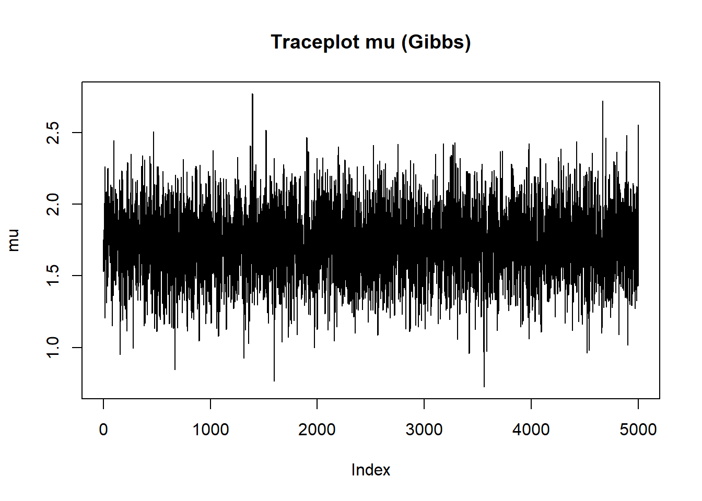
plot(sigma2_samps_gibbs, type='l', main='Traceplot sigma2 (Gibbs)', ylab='sigma2')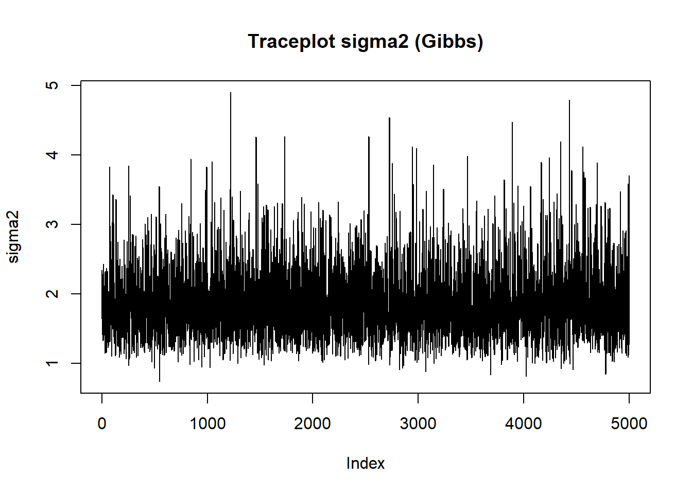
par(mfrow = c(1, 2))
# create density dataframes
dens_mu = tibble(x = density(mu_samps_gibbs)$x, y = density(mu_samps_gibbs)$y)
dens_sigma = tibble(x = density(sigma2_samps_gibbs)$x, y = density(sigma2_samps_gibbs)$y)
# visualisation of the MCMC posteriors
ggplot(dens_mu, aes(x = x, y = y)) +
geom_line(color = "blue") +
labs(title = "Densité a posteriori de mu (Gibbs)", x = "mu", y = "Densité") +
theme_classic()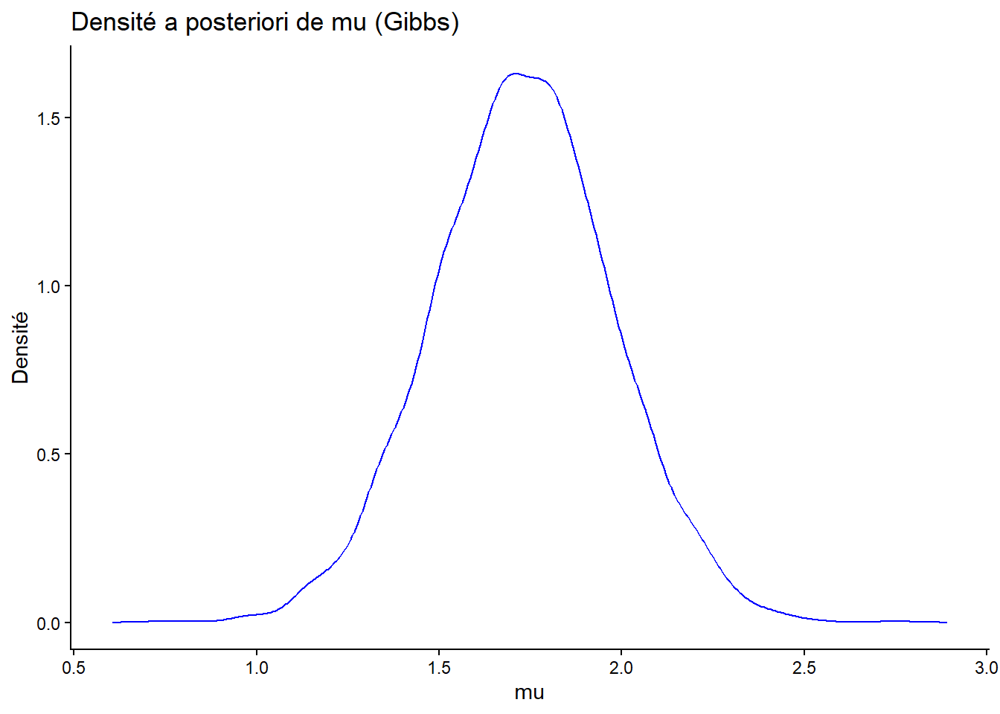
ggplot(dens_sigma, aes(x = x, y = y)) +
geom_line(color = "red") +
labs(title = "Densité a posteriori de sigma2 (Gibbs)", x = "sigma2", y = "Densité") +
theme_classic()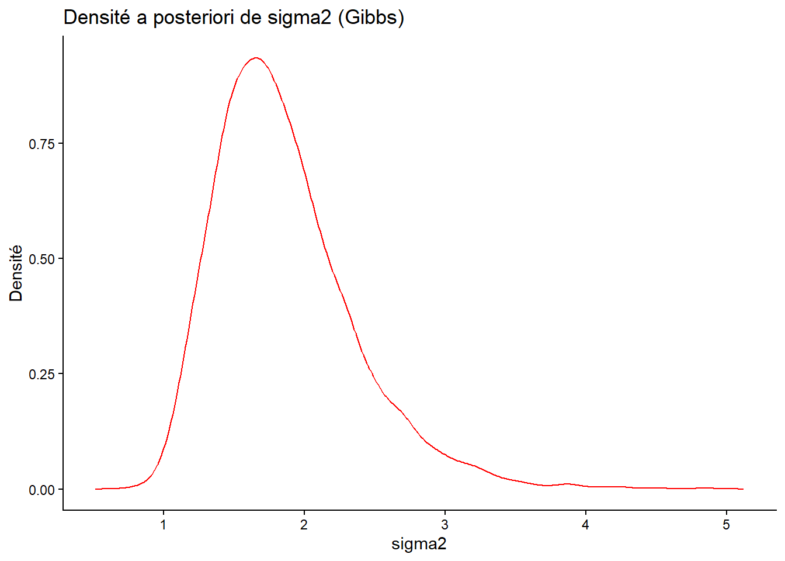
# summary statistics
mean_mu_gibbs <- mean(mu_samps_gibbs)
mean_sigma2_gibbs <- mean(sigma2_samps_gibbs)
list(mean_mu_gibbs = mean_mu_gibbs,
mean_mu_analytical = mu_n,
mean_sigma2_gibbs = mean_sigma2_gibbs,
mean_sigma2_analytical = beta_n / (alpha_n - 1))$mean_mu_gibbs
[1] 1.729404
$mean_mu_analytical
[1] 1.734625
$mean_sigma2_gibbs
[1] 1.855577
$mean_sigma2_analytical
[1] 1.887219